课程预留
Koha 的课程预留模块允许您暂时将文献移入‘预留’，并且使用特殊流通规则以便于上课时使用。
课程预留设置
使用课程预留前需要做一些设置。
首先应当通过设置 UseCourseReserves 为‘使用’来启用课程预留。
然后您需要将所有该课程的老师设置 新增。
接下来您需要新增一些院系和学期的 规范值。
您可能还需要创建新 馆藏类型，特藏代码 和/或 书架位置 ，以便读者使用。另外，您可能还需要定制 流通和罚款规则 以适用这些特殊文献（是基于小时还是天等）。
新增课程
完成课程预留设置后，就可以开始创建需要预留的课程名称列表了。
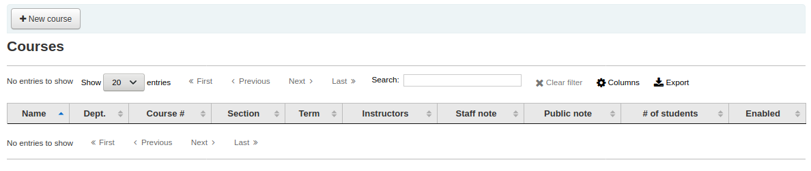
在课程预留主页面点击顶部左侧的 ‘新增课程’ 按钮就可以新增课程。
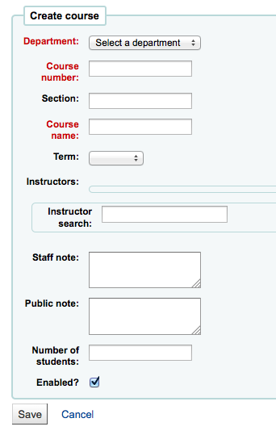
Your new course will need a department, number and name at the bare minimum. You can also add in additional details like course section number and term. To link an instructor to this course simply start typing their name and Koha will search your patron database to find you the right person.
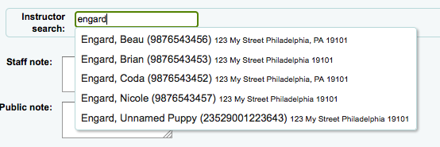
Once the instructor you want appears just click their name and they will be added. You can repeat this for all instructors on this course. Each instructor will appear above the search box and can be removed by clicking the ‘Remove’ link to the right of their name.
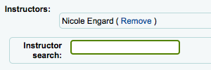
If you would like your course to show publicly you’ll want to be sure to check the ‘Enabled?’ box before saving your new course.
Once your course is saved it will show on the main course reserves page and be searchable by any field in the course.
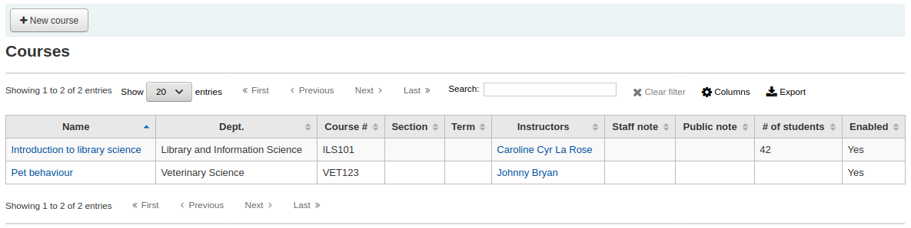
Note
- You can customize the columns of this table in the ‘Table settings’ section of the Administration module (table id: courses page, course_reserves_table).
Adding reserve materials
Before adding reserve materials you will need at least one course to add them to. To add materials visit the Course Reserves module.
Click on the title of the course you would like to add materials to.
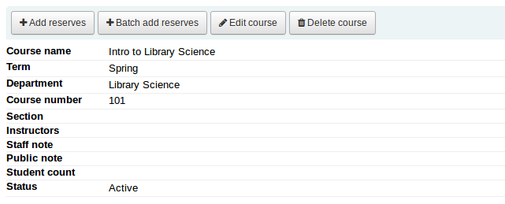
At the top of the course description click the ‘Add reserves’ button to add titles to this reserve list. You will be asked to enter the barcode for the reserve item.
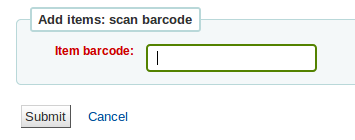
For each item, you can change the item type, collection code, shelving location or holding library. These changes will only apply while the course is active. When you deactivate the course, the items will go back to their original settings.
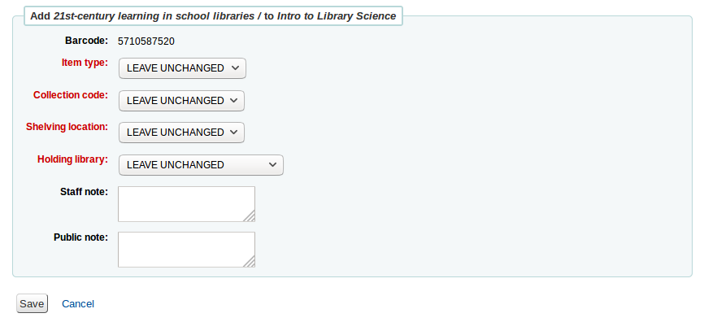
After you are done scanning the barcodes to add to the course you can see them on the course page
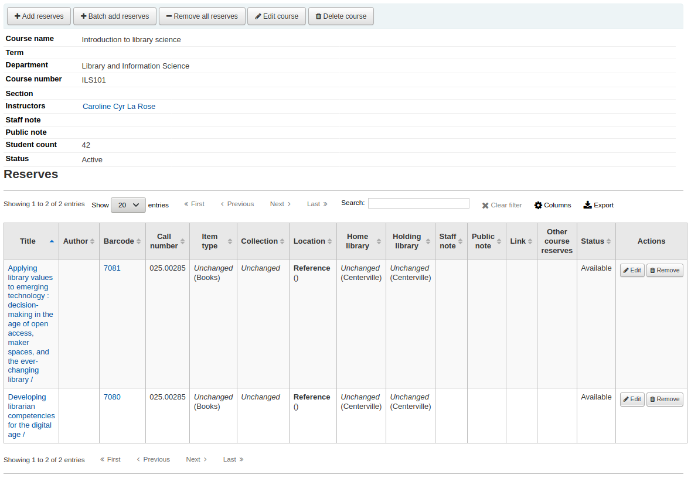
Note
- You can customize the columns of this table in the ‘Table settings’ section of the Administration module (table id: reserves page, course_reserves_table).
You also have the possibility of adding several items at the same time. Click on ‘Batch add reserves’.
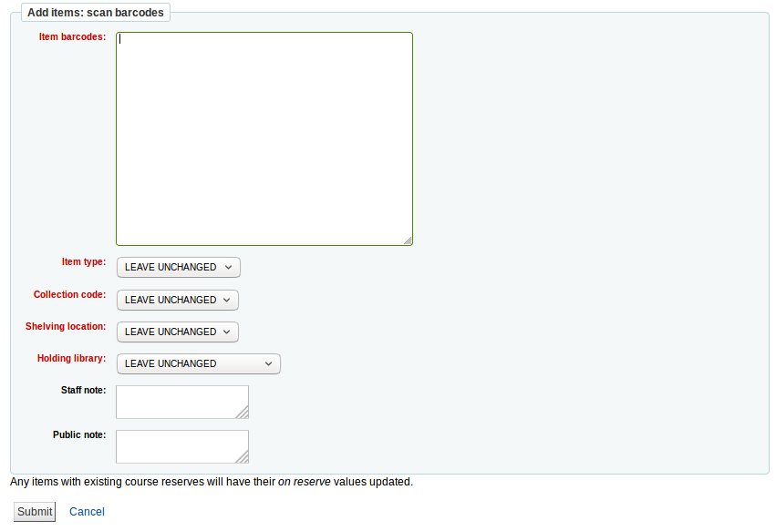
Scan the barcodes of the items you want to add to the reserve and change the item type, collection code, shelving location or holding library, if needed.
Course reserves in the OPAC
Once you have enabled course reserves and added courses you will see a link to course reserves below your search box in the OPAC.
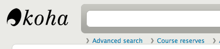
Clicking that link will show you your list of enabled courses (if you have only one course you will just see the contents of that one course).
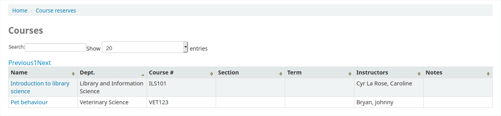
Note
- You can customize the columns of this table in the ‘Table settings’ section of the Administration module (table id: course_reserves_table).
You can search course reserves by any field (course number, course name, instructor name, department) that is visible in the list of courses. Clicking a course name will show you the details and reserve items.
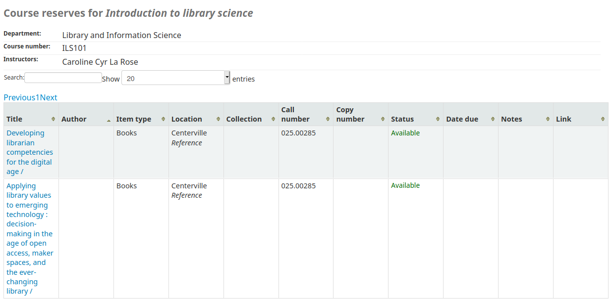
Note
- You can customize the columns of this table in the ‘Table settings’ section of the Administration module (table id: course-items-table).